Oye, tú… sí, tú, mi pingüinito ❤️🐧
¿Sabes qué es lo bonito de tenerte en mi vida? Que no necesito que pase algo extraordinario para que un día se vuelva especial. A veces basta con hablar contigo, reírnos de cualquier tontería, mirarte y pensar: «Qué bonito que seas tú».
Quién iba a imaginar que aquel 13 de septiembre terminaría convirtiéndose en una fecha tan nuestra. Sin darnos cuenta, fuimos creando nuestros propios chistes, nuestras pequeñas costumbres y esos recuerdos que, aunque parezcan sencillos, guardo con una sonrisa cada vez que vuelven a mi mente.
Y bueno, tengo que confesarte algo, mi amor… 🤭❤️ Hay momentos en los que me dan ganas de abrazarte y no soltarte, de llenarte de besitos sin ninguna razón y de quedarme cerquita de ti, disfrutando de esa tranquilidad tan bonita que me da estar entre tus brazos.
Porque cuando me abrazas, hay una parte de mí que quisiera detener el tiempo. Quisiera esconder mi carita en tu pecho, rodearte con mis brazos y quedarme ahí un ratito más, sin prisas, sin pensar en lo que sigue, solamente sintiendo que estás conmigo. A veces no necesito que me digas nada; me basta con sentirte cerquita, mirarte a los ojos y darte un besito más antes de separarnos. Y si por mí fuera, ese besito terminaría convirtiéndose en muchos más. 🙈💋
Me gusta descubrir esas pequeñas cosas de ti que quizá ni siquiera notas: tus gestos, tu manera de hacerme reír, la forma en que puedes cambiarme el ánimo con un mensajito y cómo, a veces, con tenerte cerca, ya siento que mi día es mucho mejor. Y sí, también me pasa que te extraño cuando hace poquito que nos despedimos… ¿qué culpa tengo yo de que me gustes tanto? 🤭😘
También me hace muy feliz verte convivir con mis niñas, porque ellas son una parte enorme de mi mundo. Gracias por compartir conmigo esa parte tan importante de mi vida y por los momentos que vamos construyendo juntos.
No somos una historia perfecta de película, y qué bueno, porque lo nuestro tiene algo que me gusta todavía más: somos tú y yo, con nuestras ocurrencias, nuestros días buenos, los retos que vamos aprendiendo a enfrentar y las ganas de seguir conociéndonos. Le doy gracias a Dios por permitirnos coincidir y por cada oportunidad de cuidar este amor con paciencia, cariño y sinceridad.
Así que, cuando estés viendo estas fotos, quiero que sonrías y recuerdes que detrás de cada una hay momentos que me hacen feliz. Y que, si pudiera pedir algo para nosotros, sería seguir sumando recuerdos, abrazos que duren un poquito más, besos que nos hagan sonreír y muchos días en los que podamos elegirnos de nuevo.
Y por si todavía no te había quedado claro, mi pingüinito: me encantas, me vuelves tontita con tus besos, me haces suspirar con tus abrazos y me gusta muchísimo eso que somos cuando estamos juntitos. ❤️🙈
Gracias por ser mi persona especial, por hacerme reír y por ocupar ese rinconcito de mi corazón que tiene tu nombre.
Con muchos besitos pendientes, abrazos apretados y todo el amor que te tengo…
Tu pingüinita 🐧❤️😘🌹
Nuestros recuerdos 📸
Once pedacitos de nuestra historia, guardados con muchísimo amor.
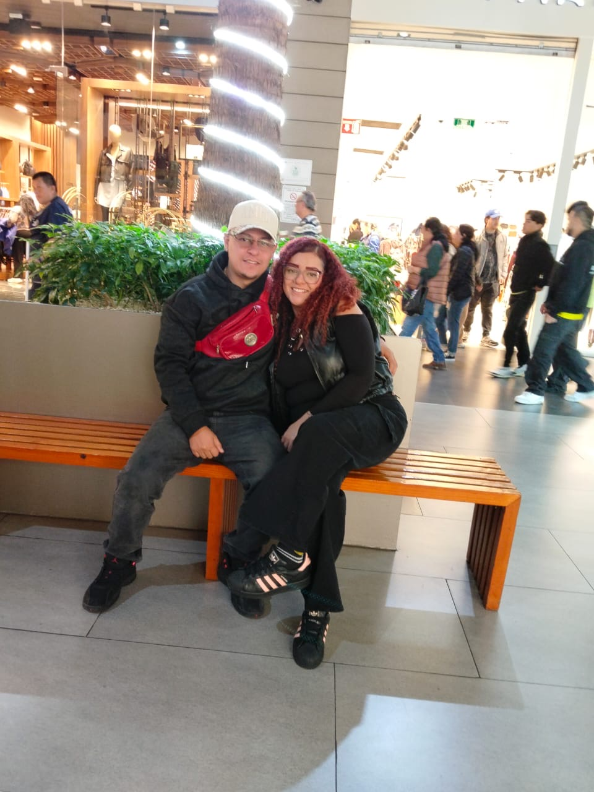
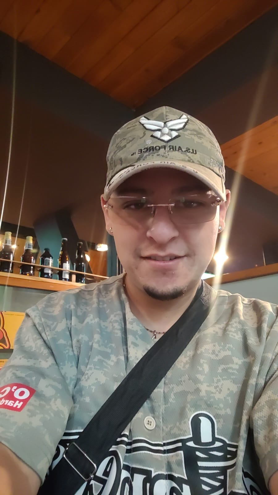
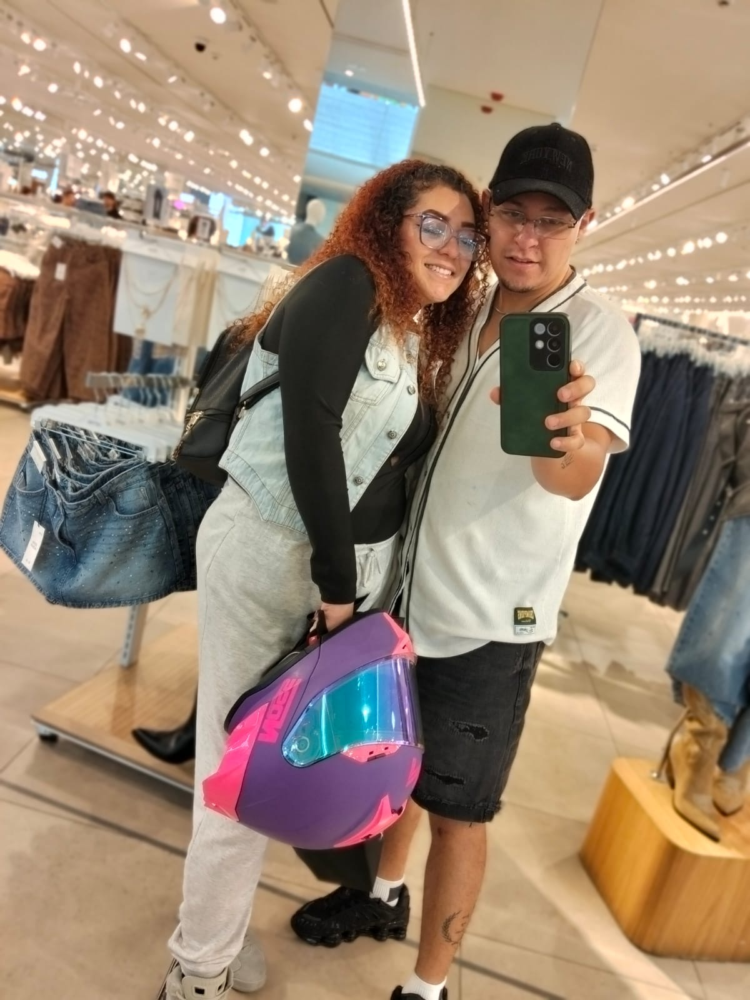
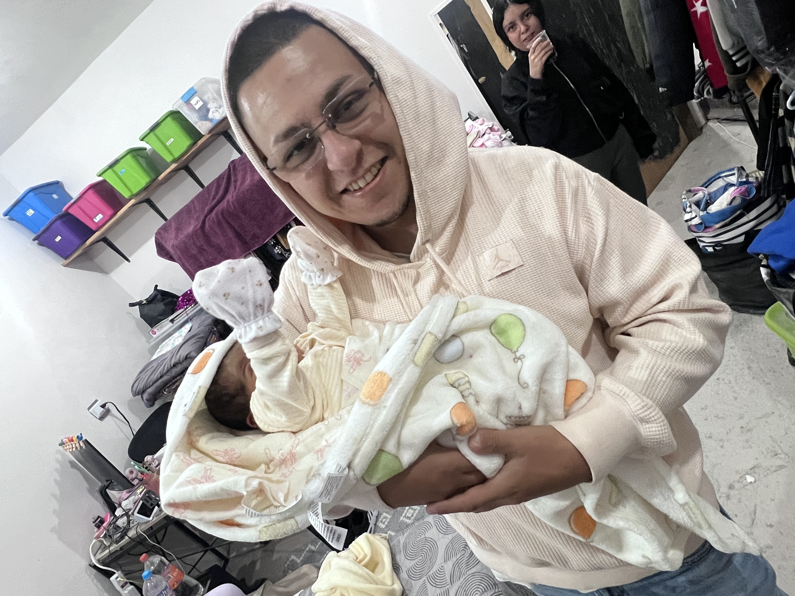
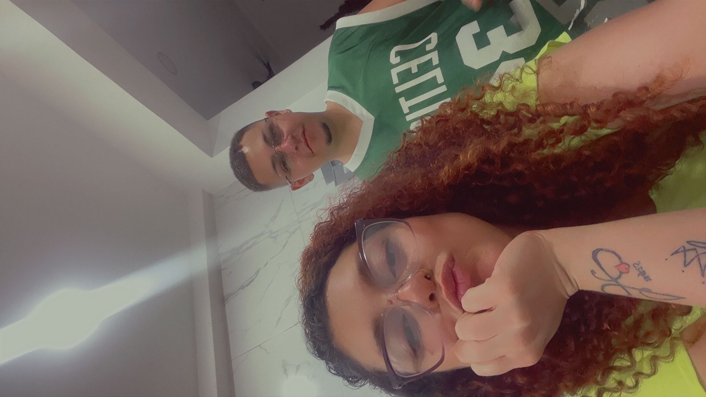
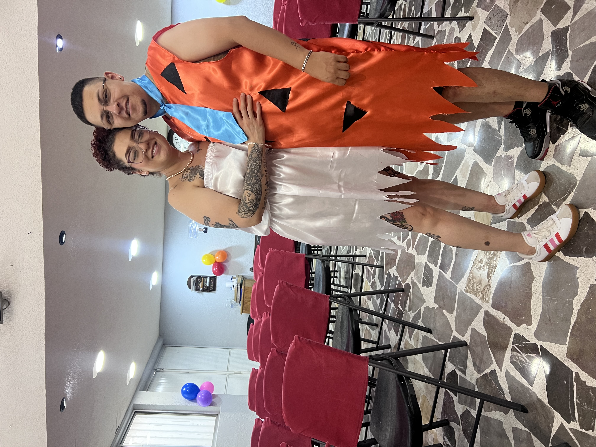
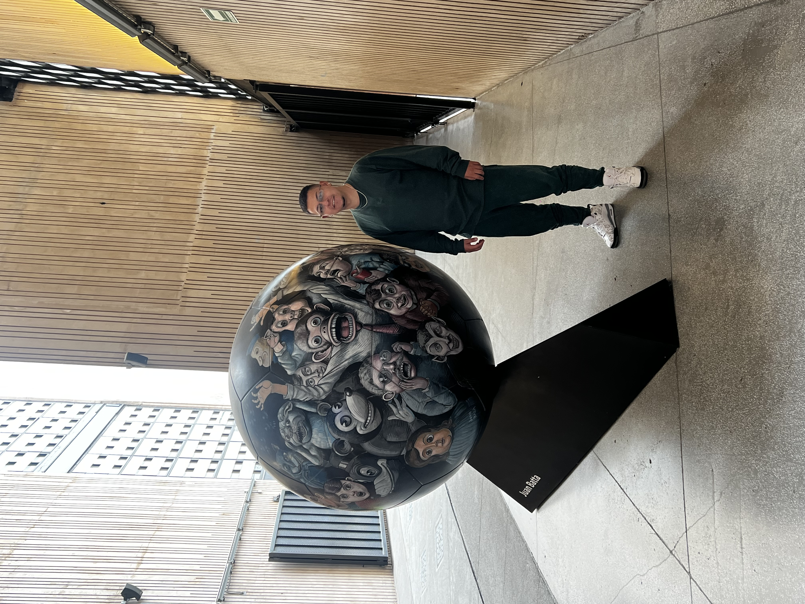
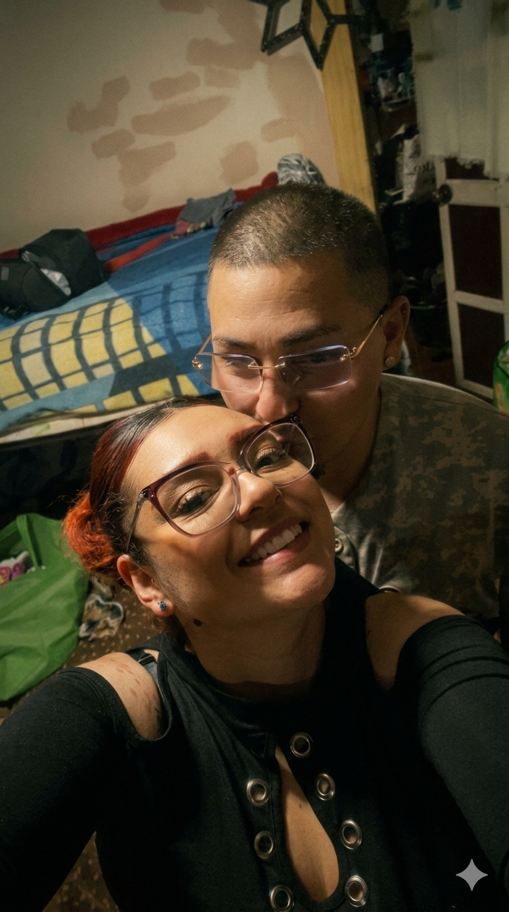
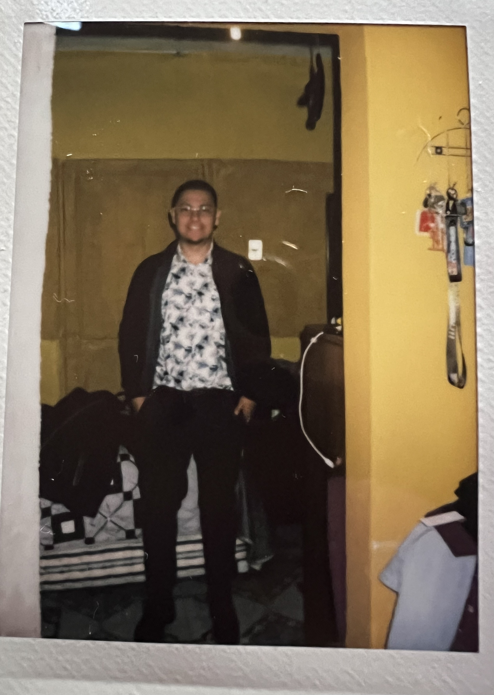
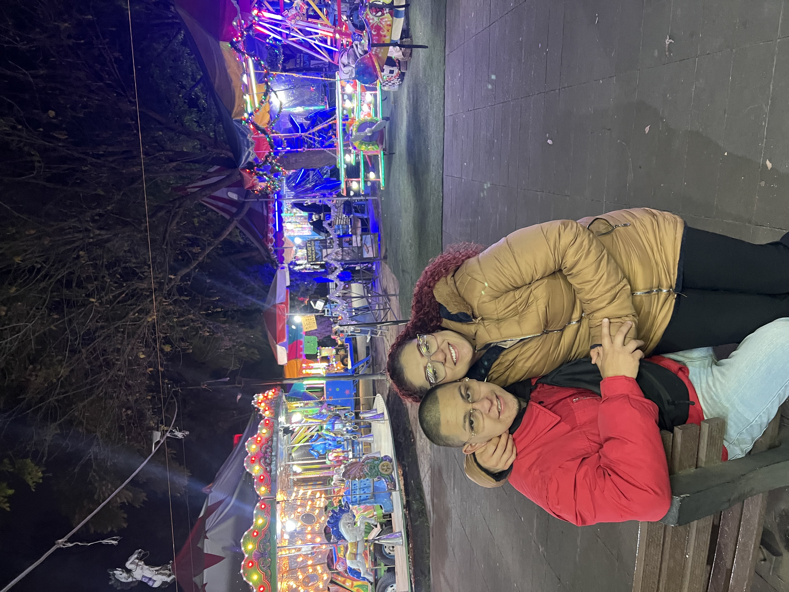
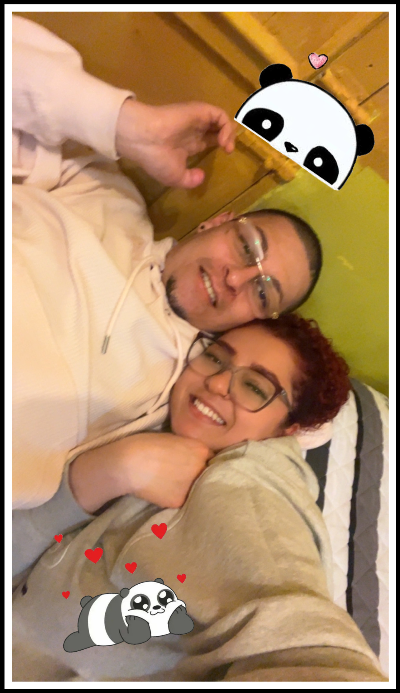
Nuestra canción 🎶
“Entra en mi vida” — Sin Bandera
Toca reproducir para escucharla. Si el reproductor no está disponible, abre YouTube.